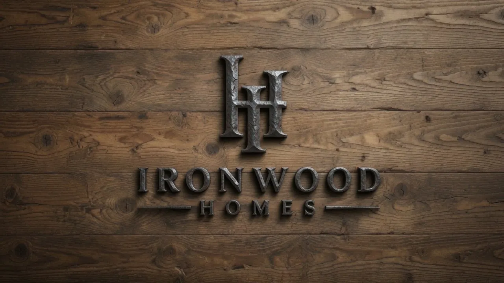

Work / Branding
Ironwood Homes
Brand identity for a custom home builder serving Star Valley, Wyoming.
 AI-directed mockup
AI-directed mockup01
The brief
To come: challenge copy
02
Strategy
To come: strategy copy
03
Identity
To come: identity copy


04
In use
To come: application copy
Scenes in this chapter are AI-directed mockups.

AI-directed mockup AI-directed mockupAI-directed mockup
AI-directed mockupAI-directed mockup05
What we delivered
BrandingLogoBrand guidelinesBrand collateral
To come: outcome in your words, or a client quote